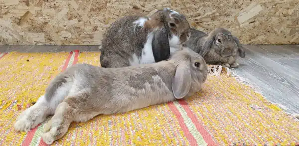
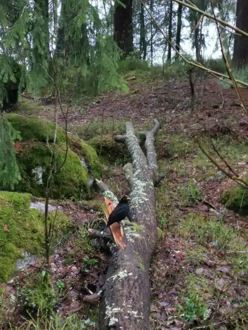
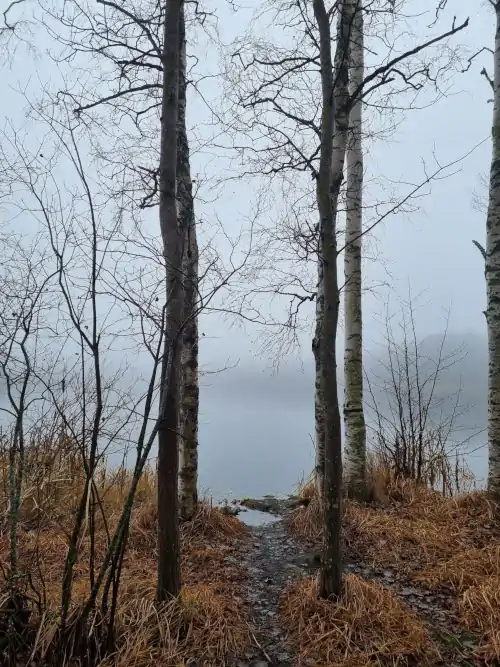

Peltolammi
"Luonto ja palvelut lähellä"
Palvelut
Tampereen Peltolammista löytyy laajasti eri palveluita, kuten apteekki ja K-lähikauppa.
Piipahda tutustumaan lemmikkieläinliikkeen pupuihin, tai istu iltaa Peltsun Saluunan terassilla!
Galleria
Kuvia Peltolammin luonnosta

